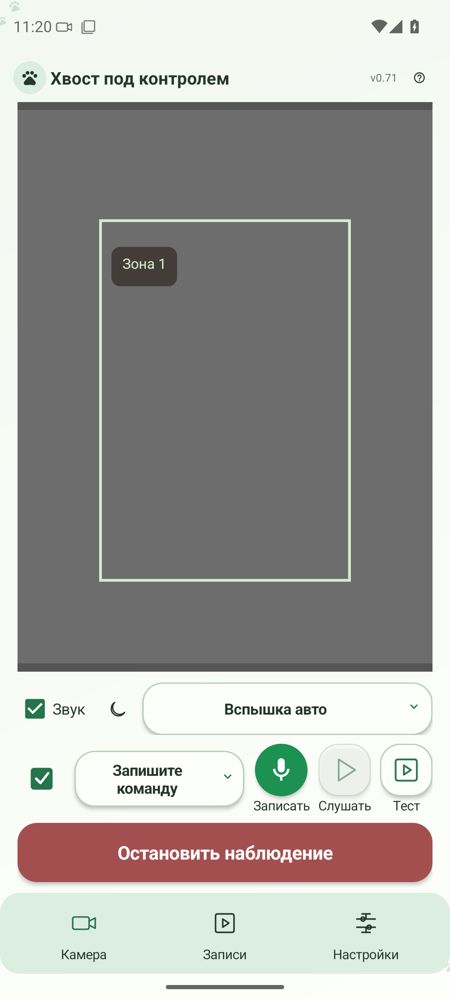
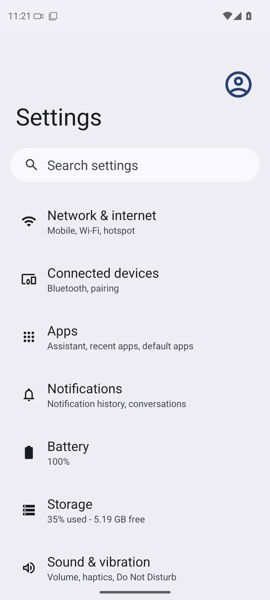
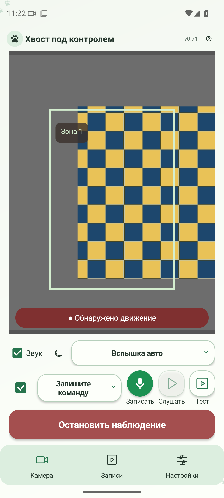
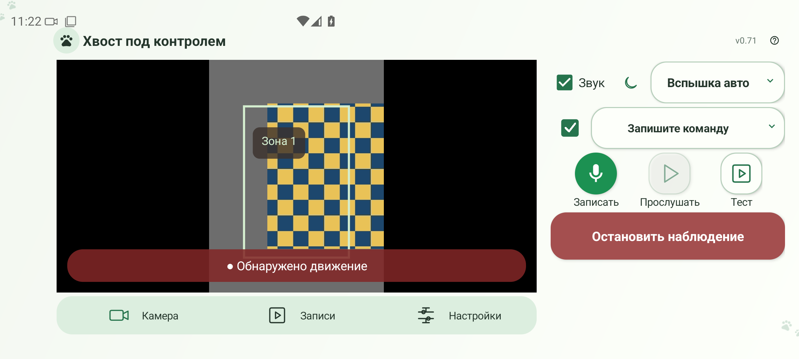
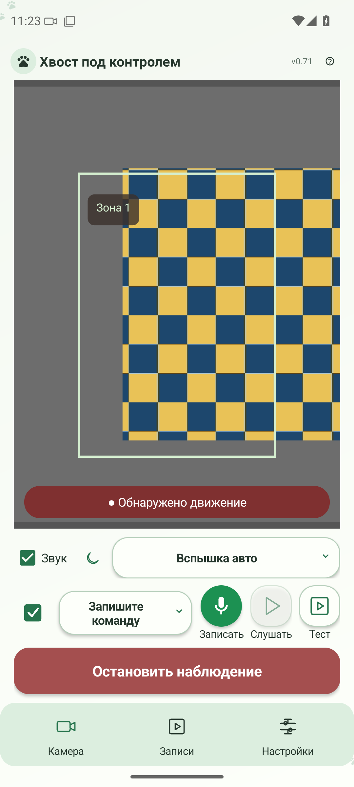
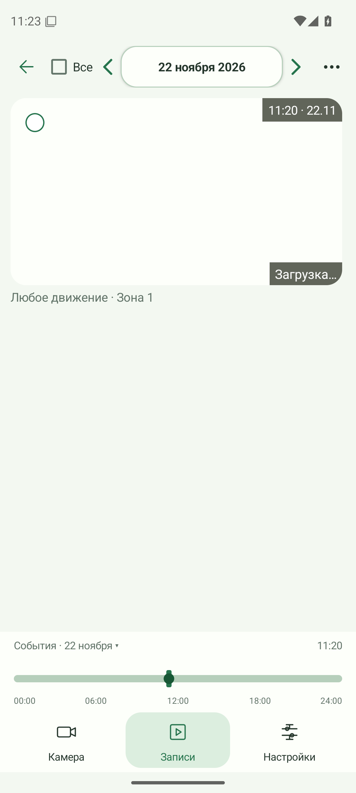
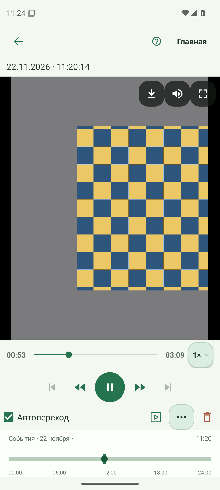

ПРОВЕРКА 0.71
Наблюдение в фоне
Android-эмулятор Pixel 6, API35. В камеру подан тестовый сигнал с движущимися квадратами. Проверялись захват, фон, звук, сохранение и просмотр. Проверка физического Samsung Fold остаётся за владельцем.
Уведомление остановило сервис. Ролик открыт штатным просмотрщиком приложения, видео и AAC полностью декодированы и проверены по временным меткам. Автоматизация остановилась при чтении изменяющегося интерфейса просмотрщика; нажатие Пауза автоматически не проверено. В журнале есть предупреждения аудиовыхода: плавность звука и синхронизацию нужно проверить на телефоне.
Свежие кадры продолжали поступать
| Состояние | Кадры анализа | Наибольший интервал |
|---|---|---|
| Приложение открыто | 9 | 2.33 с |
| Главный экран телефона | 28 | 1.34 с |
| Другое приложение | 19 | 0.85 с |
| Экран выключен | 20 | 2.21 с |
| Возврат к камере | 11 | 1.85 с |
| Альбомный режим | 10 | 1.47 с |
Исходный результат автоматизации (ошибка чтения UI) · Независимая сверка файла и фона · Время этапов · Журнал · APK и контрольная сумма
Снимки проверки







Сохранённый тестовый ролик
Длительность 189.6 с. Звук AAC, видео AVC. Воспроизведение и полная проверка декодирования пройдены.
Скачать ролик